01
Sites & applications
Votre activité, bien outillée.
Sites web
Présentez votre offre et facilitez les contacts.
E-commerce & marketplaces
Vendez et gérez vos commandes.
Applications métier
Des outils pour votre quotidien.
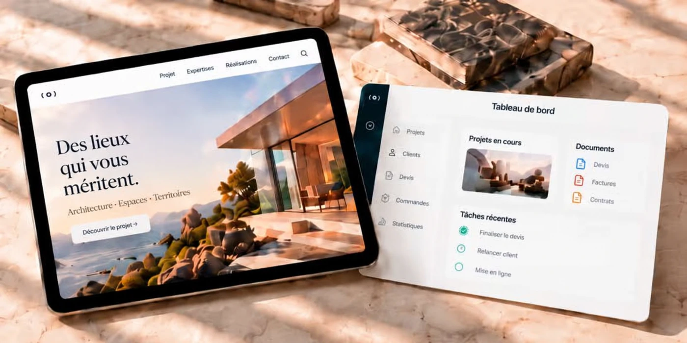
CONSEIL · TECHNOLOGIE · OPÉRATIONS
Plateformes digitales, agents IA et appui opérationnel. Des outils qui font avancer votre métier.
01 / 04
01
Votre activité, bien outillée.
Présentez votre offre et facilitez les contacts.
Vendez et gérez vos commandes.
Des outils pour votre quotidien.

02 / 04
02
Vos processus et vos équipes, mieux coordonnés.
Relances, documents et validations.
Accompagnez vos clients et vos équipes.
Connectez vos outils et vos indicateurs.
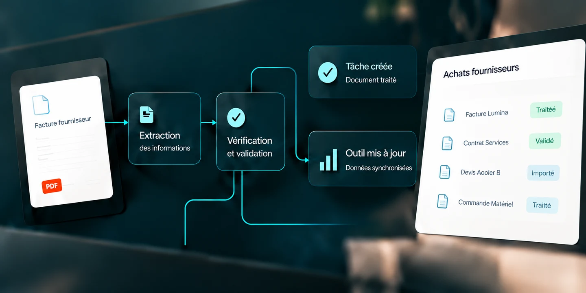
03 / 04
03
Votre marque, claire et reconnue.
Donnez une présence à votre marque.
Faites vivre votre offre sur les bons canaux.
Transformez l’intérêt en prises de contact.
04 / 04
04
Une équipe en appui, au quotidien.
Allégez votre quotidien administratif.
Fiabilisez vos fichiers et vos catalogues.
Assurez la continuité du suivi.
02 / SOLUTIONS MÉTIER
Des outils concrets pour piloter, vendre et mieux travailler.
RESSOURCES HUMAINES
Dossiers salariés, paie, carrières et mobilités.
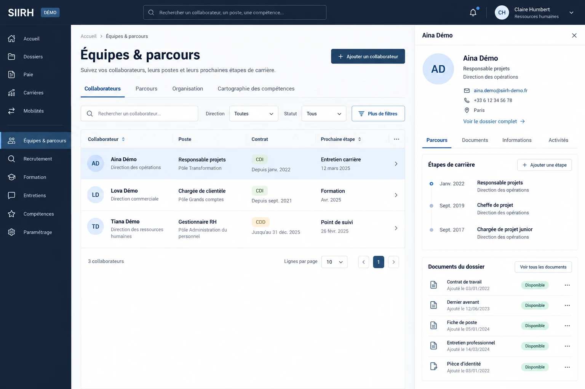
FLOTTE & EXPLOITATION
Votre flotte, son carburant et sa maintenance.
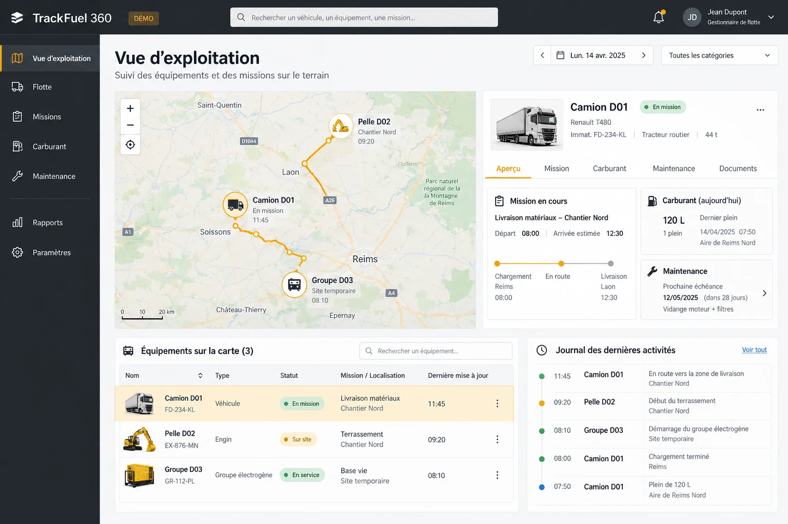
GESTION DU PATRIMOINE
Vos biens, leur état, leurs usages et leur entretien.
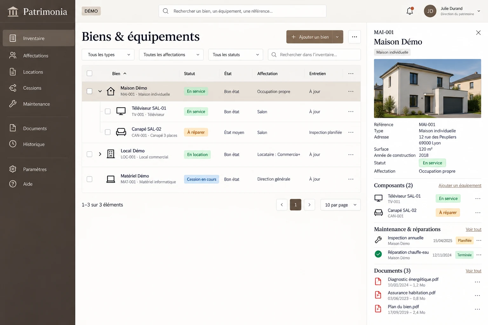
RÉSERVATIONS & ACCÈS
Réserver, payer et contrôler les entrées.
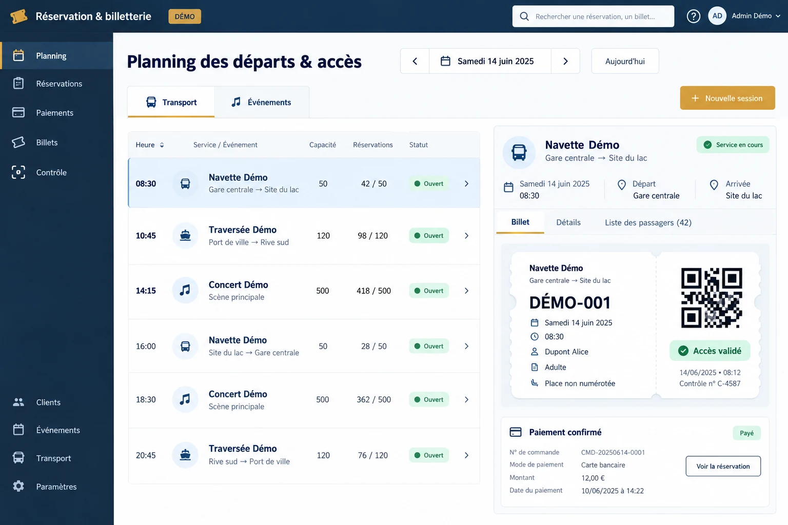
COMMERCE & MARKETPLACE
Des boutiques et des produits à portée de clic.
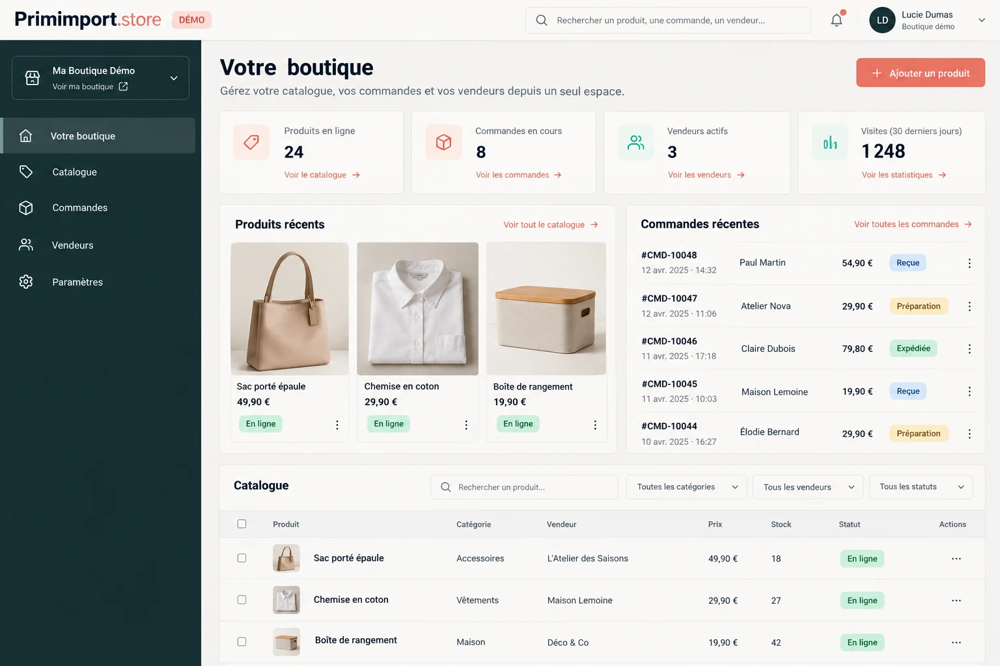
GESTION DE CABINET JURIDIQUE
Affaires, documents, agenda et facturation réunis.
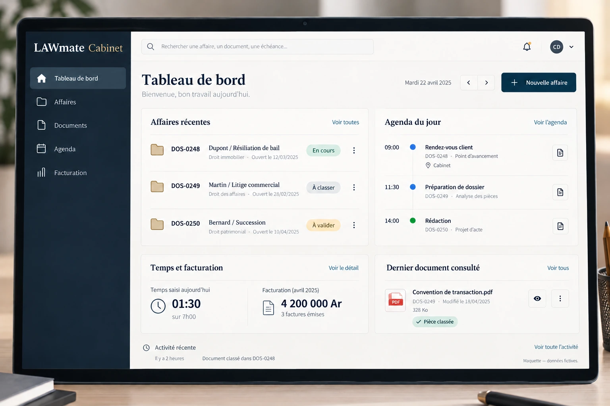
CENTRES DE SANTÉ & HÔPITAUX
Patients, rendez-vous, facturation et pharmacie intégrée.
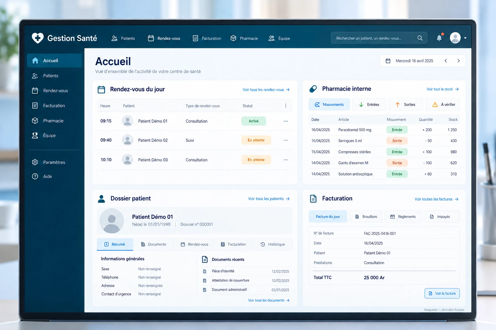
PHARMACIES & GRAND PUBLIC
Catalogue, commandes et contact avec votre pharmacie.
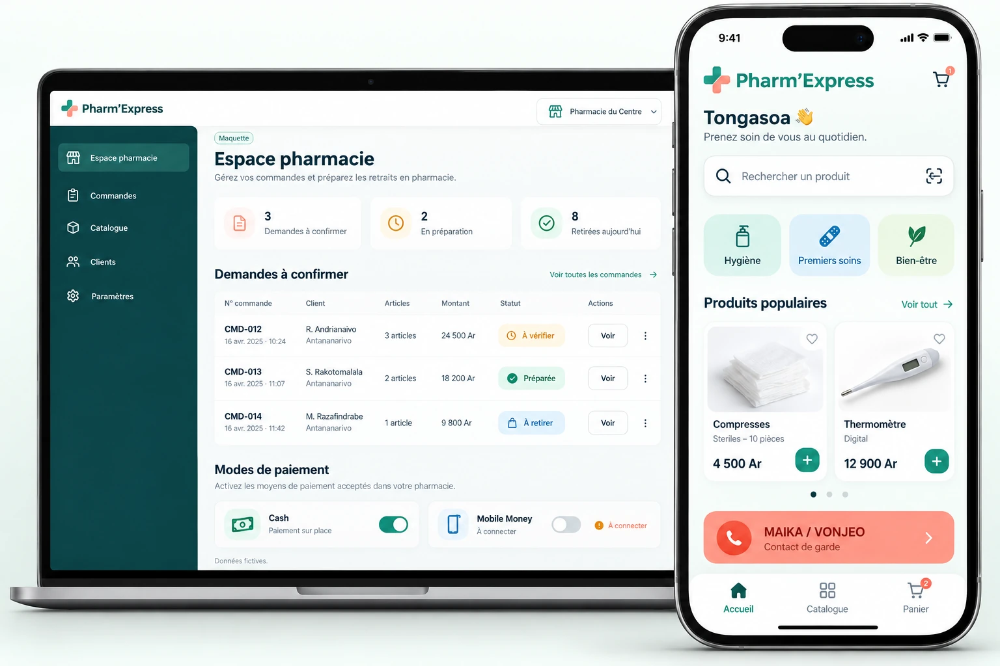
Visuels de démonstration. Ouvrez une fiche pour découvrir la solution.
RELATION CLIENT · CENTRES D’APPELS
Qualifier vos prospects, répondre aux demandes, prendre rendez-vous : des agents IA qui font avancer la relation client.
Voix ou messages, prise de commande, paiement et connexion à vos outils : les possibilités sont étudiées selon votre projet, avec des règles et une supervision définies ensemble.
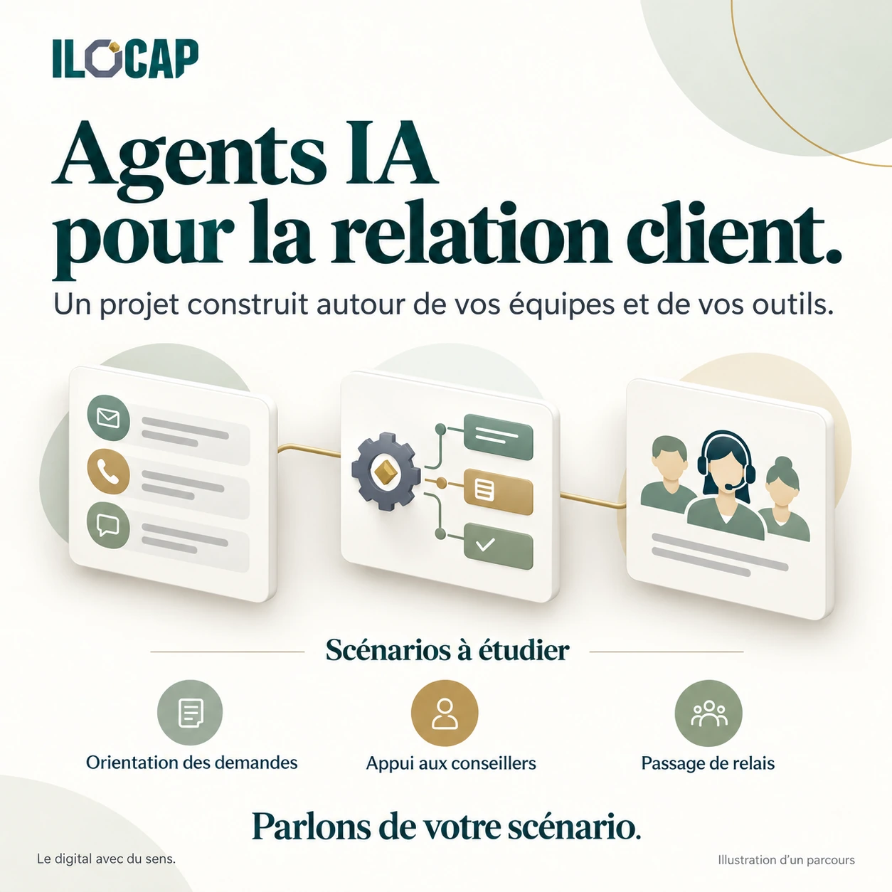
03 / VOTRE POINT DE DÉPART
Décrivez vos objectifs, votre organisation et vos outils. Nous identifions les expertises et le niveau d’accompagnement adaptés à votre projet.
Vos réponses restent dans cette page. Elles sont transmises uniquement si vous choisissez d’envoyer une demande.
04 / ILS AVANCENT AVEC NOUS
Entreprises, institutions et porteurs de projets : des références issues de notre écosystème.
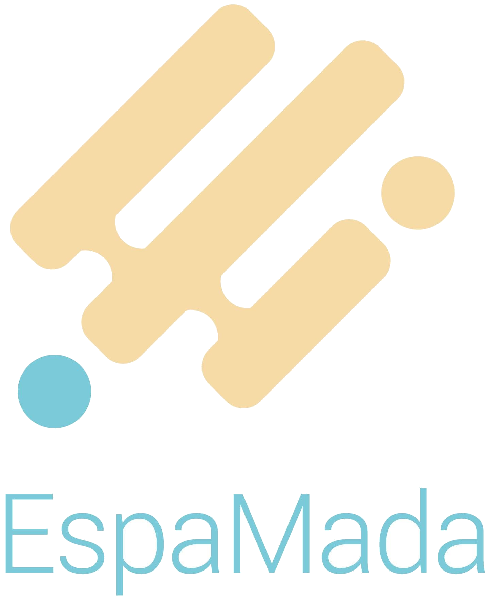
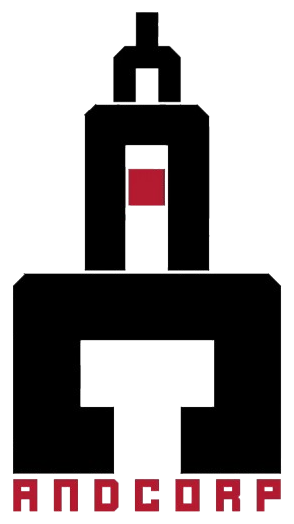
NOTRE FAÇON D’AVANCER
Des choix proportionnés à vos enjeux, une mise en œuvre lisible et des équipes accompagnées.
Partir de vos usages, de vos contraintes et des irritants du quotidien.
Définir un périmètre utile, des livrables et des critères de réussite partagés.
Concevoir, tester et ajuster la solution avec les personnes qui l’utiliseront.
Préparer la prise en main, suivre les usages et faire évoluer ce qui compte.
05 / POUR Y VOIR PLUS CLAIR
Trois guides pratiques pour préparer votre projet et rendre notre premier échange plus utile.
VOS QUESTIONS
Non. Présentez simplement le problème, les personnes concernées et ce que vous souhaitez améliorer. Nous pouvons vous accompagner pour cadrer le besoin avant la réalisation.
Oui. Un périmètre ciblé ou une mission pilote permet de valider la méthode de travail et les livrables avant d’envisager une extension.
Après un échange de cadrage : objectifs, complexité, volumes, intégrations et niveau d’accompagnement. La proposition précise le périmètre, les livrables, le calendrier et les conditions.
Nous définissons les tâches, les volumes, les consignes, les accès nécessaires et les validations. Une phase pilote et un contrôle qualité peuvent être convenus avant la montée en charge.
ET MAINTENANT ?
Une idée, un projet ou une tâche à déléguer ?
Commençons par ce qui vous serait vraiment utile.
Antananarivo, Madagascar · Collaboration à distance